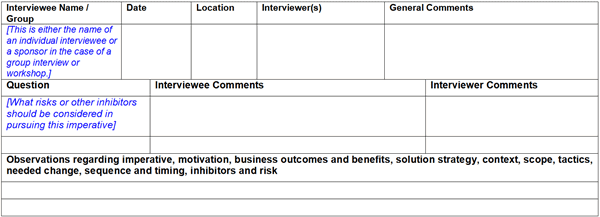

Purpose of Information Gathering
In general, the purpose of interviews, meetings and workshops can be summarized as follows.
-
Clarify the initial client imperative
-
When appropriate identify additional or subordinate imperatives
-
Identify all aspects of motivation for pursuing the imperative
-
Establish business outcomes and benefits of addressing the imperative
-
Develop and gain support for a solution strategy
-
Determine what domains or sub domains are in scope when considering the solution strategy
-
Identify specific tactics, transformation initiatives, projects or individual changes that will be required.
-
Understand what factors may affect sequence and timing of potential transformation initiatives and individual
changes
-
Identify potential risk and inhibitors
Information Gathering Approach for the Transformation Roadmap
Although some cases with narrow scope may require only a single workshop, in most cases the
recommended approach is a combination of individual interviews and group meetings or workshops. The most important
interview of course is with the client sponsor who has the vision and authority to state what the client is trying to
achieve (the initial client imperative). Given this initial imperative, it will normally be be necessary to
establish scope and context for potential changes and the gradual development of a solution strategy. If the context
and scope are fairly broad, it may be more productive to first conduct individual interviews to separate concerns and
identify individual aspects of the solution strategy. A workshop or group meeting can then be used
to address cross domain issues and the overall solution strategy. There is no formal definition intended, but
a group meeting might be associated more with data gathering and discussion, whereas a workshop would be intended to
reach conclusions regarding solution strategy and a potential transformation roadmap. The initial solution strategy and
its likely scope and context can be used to select interviewees and meeting participants. Refer to the Client
Imperative (ART 0696) for explanation of the imperative statement and solution strategy. Refer to
Guideline: Identifying Transformation Initiatives for an explanation of defining context and scope.
Interview Questions
It is recommended that you establish a set of key questions for use in client interviews. While interview
questions will always be unique to a particular client, the following generic questions based on the purpose described
above can serve as a starting point to create a tailored set of questions. .
-
Start by introducing the client imperative statement.
-
Tell me your perspective on the initial client imperative as expressed by the client sponsor. Are there other peer
or subordinate imperatives that should be considered?
-
What do you think is the primary motivation for addressing this imperative?
-
What business outcomes and benefits would you hope to achieve by addressing this imperative?
-
Do you have an opinion on an appropriate overall strategy to effectively address this imperative?
-
What aspects of the overall IT domain should be considered when evaluating the need for change?
-
What specific tactics, projects or individual changes would you consider necessary?
-
Do you have an opinion regarding dependencies, sequence and timing of possible changes?
-
What potential risks and inhibitors should be considered?
Note: If this opportunity originated with the client's interest in one of the IBM Blueprint's Industry
Imperatives, the Client Imperative represents a specialization of the Industry Imperative, tailored to suit a specific
client's needs. In such cases, information associated with the Industry Imperative may be helpful in documenting the
client imperative and the transformation roadmap. This information includes candidate business outcomes, potential
stages of transformation, possible client motivation and candidate solutions.
The following attachment may be helpful for more complex information gathering.
interview_specifications_tmap.doc
Interview Results
Interview results should be recorded to enable a disciplined analysis of the results.
-
For each predetermined question, record a summary of client comments
-
After the interview, elaborate on client comments and add any observations regarding the question or client
response
-
Record the result of any ad hoc questions or comments that arise during the interview
-
Establish the relationship between individual and the initial imperative, motivation, business outcomes and
benefits, solution strategy, tactics, needed change, sequence and timing, inhibitors and risk. Use of a
spreadsheet or other organizing approach will aid analysis and development of recommendations. Establishing these
relationship is simplified If the interview questions are formally structured according to these categories.
If you choose to develop a standard information gathering form, the following template (see attachment below) may be
helpful.

interview_results_tmap.doc
|